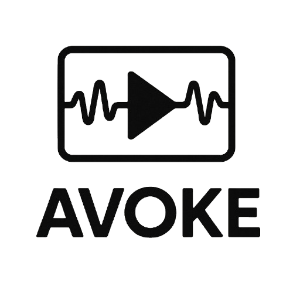

As web-based experiments become increasingly popular, the need for accessible, efficient research methods is greater than ever. However, current open-source frameworks sometimes lack detailed documentation, leaving many novice researchers struggling to create their experiments without significant time investments in learning the required technical skills. To meet this demand and further the capabilities of web-based experiments, we propose AVOKE—a diverse set of experimentation plugins and extensions built on top of jsPsych, an open-source JavaScript library for web-based behavioural experiments. AVOKE includes the code and documentation needed for novice researchers to easily integrate a variety of audiovisual stimuli in their experiments. Currently, AVOKE supports temporally-precise presentation of audiovisual stimuli (e.g., external media sources like YouTube, moving objects, etc.), as well as the collection of behavioural responses, like keypresses and video capture (e.g., for recording face videos or participants). All features have been developed according to jsPsych standards and validated through numerous tests developed using simulate functions.
Audio-visual-button-response
This plugin allows for displaying an image and playing an audio file simultaneously, and records responses generated with a button click. The included parameters allow for adjustment of trial duration, visual stimuli size, time delay before the button can be interacted with and more. The trial can be set to end when a button response is received or after the audio stimulus is finished playing.
Stimulus-matrix-display
This plugin implements a stimulus matrix display trial used for eyetracking experiments and other research studies. A target ('E' by default) appears in random locations on a customizable grid layout. The target can optionally be rotated using user-defined angles, or displayed without rotation. Participants respond with arrow keys (for rotated targets) or by clicking on targets when clickable mode is enabled. The plugin supports flexible grid sizes, both text and image targets, and uses standardized research stimuli (CFD, IAPS databases).

Path-animation-display
This plugin presents an image target that moves along a path with a shape and pace determined by the experimenter. The target will begin moving after a keypress and the trial will end when the target finishes travelling along the path.